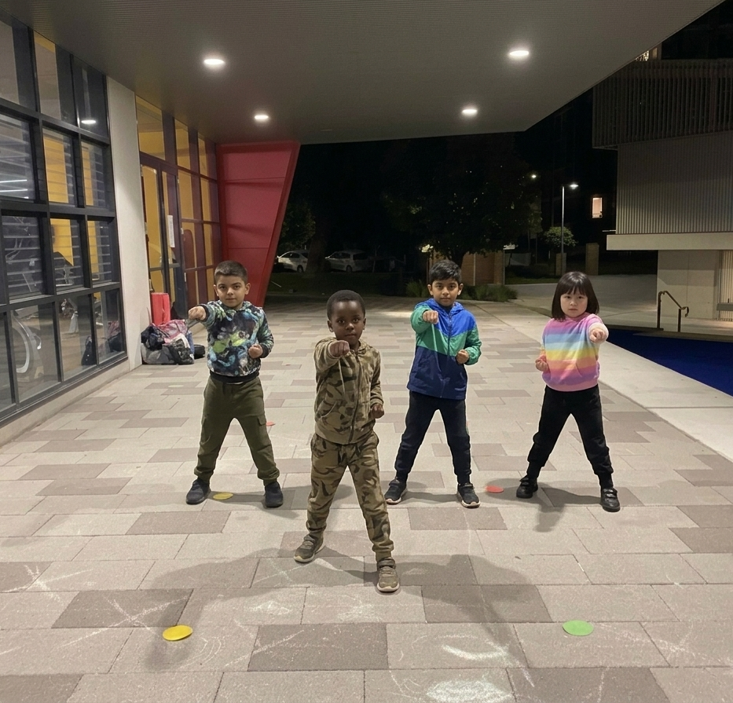

This school holiday, give your child something that sticks beyond the break. Authentic Choy Lee Fut Kung Fu for kids aged 6–14. Outdoor sessions on Sydney’s North Shore — Marsfield and Waitara. Small classes, expert instruction, and a first class that’s completely free.
Takes 2 minutes · No payment info required · First class completely free
See what’s included in a holiday class ↓20+
Years Teaching
6–14
Ages Welcome
$0
First Class Free
☀
Outdoor Venues

Each session is one hour, structured and engaging. Here’s what a typical class looks like:
🏃
We start every session with a fun warm-up and foundational stance training. Kids learn to plant their feet, breathe right, and move with purpose from day one.
✊
Sifu Angus introduces two or three Choy Lee Fut techniques — strikes, blocks, or kicks. Kids drill individually and in pairs, building coordination and timing.
🛡
Each class includes age-appropriate self-defence skills: how to create distance, use your voice, and stay safe. Practical and confidence-building, not scary.
The school holidays — April, July, September, and the long summer break — are when many Sydney parents find themselves looking for something structured, outdoors, and genuinely useful for their kids. Screen time fills the gaps fast. Kung Fu gives children something to practise, talk about, and look forward to.
Because Tse Academy runs regular Tuesday and Saturday sessions year-round, starting in the holidays means your child isn’t “behind” anyone. They join at Level 1 and progress from there. If the holiday session sparks something, the regular classes are right there to continue.
No juggling of school-night schedules, no pressure. Just show up, try a class, and see how your child takes to it.
Classes run every week including through school holidays. Both locations are on Sydney’s North Shore. View the full kids program →
{% include schedule-cards-en.html filter="kids" enroll_url="https://docs.google.com/forms/d/e/1FAIpQLSeNLhIwc0D4bmBNuAlrZ8p9-38qFTWtVmVwyIWaphRDmoXcfQ/viewform" new_window=true %}Our classes run continuously throughout the year. Whenever your child is free, we’re open.
Approx. 2 weeks. Great time to start — smaller groups and relaxed Saturday mornings in autumn sunshine.
Approx. 2 weeks. Winter break. Outdoor classes run at both locations — dress in layers and bring a water bottle.
Approx. 2 weeks. Spring weather. Ideal outdoor conditions at Marsfield Park and Waitara.
Approx. 6 weeks. Our longest break — plenty of sessions before school resumes. Saturday mornings in the park are a summer highlight.
NSW school holiday dates vary slightly each year. Check the NSW Department of Education website for exact dates.
When dropping your child off for a holiday activity, you want to know who’s in charge. Here’s Sifu Angus.

Sifu Angus has over 20 years of authentic Choy Lee Fut Kung Fu experience. A 6th DAN certified instructor trained in Hong Kong under Grand Master Chu Shiu Ki, he holds a current Working With Children Check (WWCC) and Senior First Aid certificate.
Classes are structured, attentive, and fun — with small group sizes that mean every child is seen and coached, not lost in the crowd.
Learn more about Sifu Angus →“My son has been training here for three months and the change has been incredible. He’s more confident, more focused at school, and he actually looks forward to Saturday mornings. Sifu Angus is patient with the kids and genuinely cares about their progress.”
None at all. All holiday trial students start at Level 1 (Rabbit) — the very beginning. The 5-level system is designed to bring in complete beginners, so no prior experience is needed or expected.
Classes run for 60 minutes. Saturday sessions are at 11:45am in Marsfield and Tuesday sessions are at 6pm in Waitara.
The first class is completely free — no payment information, no sign-up fee, no obligation to continue. Fill in the booking form, show up, and see how your child takes to it.
Comfortable sports clothes and trainers are all they need. No special uniform is required to start. Bring a water bottle.
Yes. Our outdoor venues make it easy for parents to observe the whole session. You’re welcome to stay.
Kids classes are designed for children aged 6 to 14. For younger children aged 3–5, see our Preschool Kung Fu program.
Absolutely. The ongoing program runs every Tuesday and Saturday year-round at $60/month or $20 per class. Many kids who start in the holidays choose to continue once the term begins — they already know the instructor, venue, and classmates. View the full kids program →
One hour of Kung Fu. Outdoors. Small group. Expert instruction. First class free. What’s to lose?
Book a FREE Holiday Trial →Takes 2 minutes · No payment info required · First class completely free
Looking for school holiday activities for kids near Marsfield, Waitara, Ryde, Epping, Eastwood, Hornsby, Pennant Hills, or anywhere on Sydney’s North Shore? Tse Kung Fu Academy runs kids Kung Fu classes at two outdoor venues easily accessible from across the North Shore. No gym memberships, no complicated scheduling. Just show up, try a class, and see if your child loves it.
Join a Holiday Class TodaySchool holiday activity
First class FREE